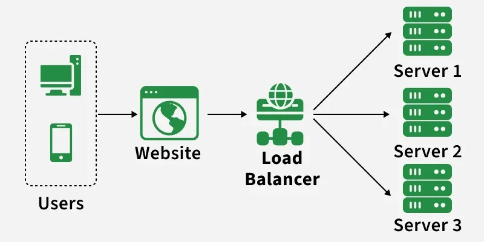

System Design
System design is the process of defining the architecture, components, and relationships of a system to make it robust and reliable.
System design is the process of defining the architecture, components, and relationships of a system to make it robust and reliable.
Availability and scalability are key aspects of system design. They ensure that the system can handle a large number of users and requests without downtime.

With a Load Balancer, it distribute the requests between servers using differents algorithms like:

To store the user data, we need a physical or cloud placement, the data can be stored in differents formats.